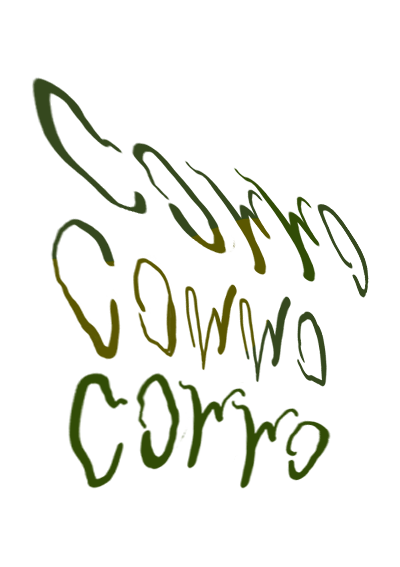

ABOUT
Commo is an independent, Montreal-based online publication. We are committed to socially and politically conscious practices. We look for new and critical voices, experimentation, and play. Commo publishes bi-annually. Commo is obsessed with writing.
Physical copies of the current issue are available by request - contact us to place your order.
For all inquiries, contact us at hello@commo.xyz
Editor-in-Chief: Emily Zuberec
Web Design:
Logo: Loris Kecaj